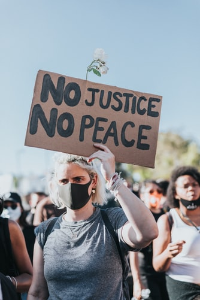

¿Como ayudamos a las personas de bajos recursos?
En el caso de las personas de bajos recursos vamos brindarles diferentes servicios tales como.
Acceso a todos las areas de de salud
Manejar el dinero, preservar la salud y participar en la comunidad son solamente algunas de las áreas en las que muchas de las personas pobres tienen dificultad. Ayudarles a aprender esas y otras habilidades que mejorarán sus vidas puede contribuir mucho a su autosuficiencia.
Cumplimiento de todos los derechos humanos
Las oportunidades para los pobres simplemente no surgen de la nada. Existen debido a la política, el financiamiento y el clamor de las organizaciones comunitarias, los activistas y los mediadores. Mucho del trabajo real de proporcionar oportunidades para los pobres viene de la abogacía de los mediadores, utilizando relaciones con legisladores y funcionarios locales

Acceso a un empleo digno
El impacto del crecimiento económico sobre la creación de empleo decente ha sido maximizado,integrando desde un enfoque coherente los obje1vos de empleo decente con las polí1cas macroeconómicas y sectoriales.

acceso a la educacion
La educación parvularia (preescolar) atiende a niños de cuatro a seis años de edad. La educación básica se ofrece normalmente a estudiantes de siete a quince años de edad y es obligatoria. Se puede admitir alumnos de seis años, siempre que bajo criterio pedagógico demuestren madurez para iniciar estos estudios y existan los recursos en los centros educativos. La educación básica comprende 9 grados de estudio divididos en tres ciclos de 3 años cada uno. La educación media ofrece la formación en dos modalidades, una general y otra vocacional. Los institutos educativos oficiales que imparte la enseñanza del nivel medio se definen como Institutos Nacionales